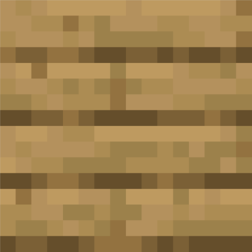

Camera
-
Z far
+
-
R dist
+
-
Theta
+
-
Phi
+
Material
Shininess 1
100
Spotlight
Spotlight
Intensity 0.25
7
Light cutoff angle 1
30
Light direction theta -90
90
Light direction phi -90
90
Rotation
Rotation speed 50
400
Rotation origin X -3.0
3.0
Rotation origin Y -3.0
3.0
Rotation origin Z -3.0
3.0
Rotate X
Rotate Y
Rotate Z
Start/Stop
Toggle Rotation Direction
Toggle Texture
Toggle Shader
Toggle Motion Blur